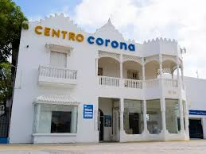
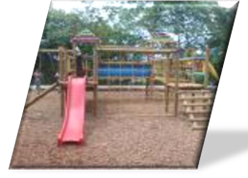
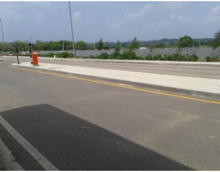
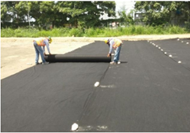
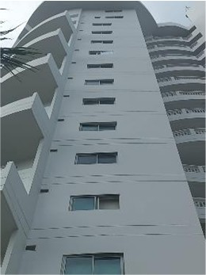

Principales Obras Realizadas
A continuación, algunas de las obras ejecutadas o supervisadas:
Ing. Ramón Arellano del Río
Remodelación y ampliación de escuelas y centros de salud – Zona Sur Oriental de Cartagena.

Arq. Wilbert Rodríguez Ching
Bodega Dicecor – Corona Cartagena.
Interventoría Remodelación Casa Galicia.
Gobernación de Bolívar
Construcción 1ra etapa Mercado Público – Barranco de Loba.

Telecom
Obras de mantenimiento drenaje de aguas lluvias infiltradas.

Telecartagena S.A. E.S.P.
Reparaciones locativas y construcción sede social.
Puertos de Colombia – Terminal Marítimo
Reparaciones locativas, pisos, resanes, impermeabilización, adecuaciones, divisiones y más.

Instituto de Seguros Sociales
Instalaciones eléctricas, divisiones, pintura, mantenimiento.
.png)
SENA
Interventoría técnica, adecuaciones industriales, pintura, impermeabilización, laboratorios.
.png)
Construir Ltda.
Trabajos especializados en infraestructura para refinería Ecopetrol – Cartagena.
.jpg)
Tenaris – Tubocaribe
Más de 40 obras: cimentaciones, muros, baños, drenajes, geomenbranas, canales, transformadores.
.jpg)
Conjunto Residencial Los Ejecutivos
Impermeabilización, cambio de techo, reparación de tanques.
.jpg)
Alcaldía Municipal El Paso
Interventoría adecuada Institución Educativa Benito Ramos Trespalacios.

Arquitecto Rafael Mendieta
Remodelación Centro Médico 54 – Santa Lucía.
.jpg)
Bocagrande Avenida San Martin Cartagena
Remodelación – Bocagrande.
.png)
Febor entidad cooperativa
Fabricación y el Suministro de Muebles Escolares para Aulas Vereda Puas.
Construcción de Aulas de 6x5, 6x2,8 en Sistema RBS 64 mm Royalco de pvc en Arroyo de Piedra Vereda la Púa de la ciudad de Cartagena de Indias.
.png)
ASOCIACION COLOMBIANA DE LA IGLESIA DE JESUCRISTODE LOS SANTOS DE LOS ULTIMOS DIAS
Mantenimiento Capilla Ciudadela – Barranquilla .

RENOVACION CARISMATICA
RENOVACION CARISMATICA – María de Nazaret Cartagena .
.jpg)
CONASEL INGENIERIA
Ingeniero Director de Obras de reparación y Mantenimiento de estructura En mal estado en Tubocaribe – Tubocaribe - Cartagena .

En el Plan maestro Tenaris Tubocaribe
construcción de Andenes Bordillos y Placas – Tubocaribe - Cartagena .
Plan maestro Tenaris Tubocaribe
Suministro y Colocacion de geomenbranas – Tubocaribe - Cartagena .
Plan maestro Tenaris Tubocaribe
Construcción de Canales de aguas Lluvias. – Tubocaribe - Cartagena .

Plan maestro Tenaris Tubocaribe
Suministro y Colocación de Grouting para bases – Tubocaribe - Cartagena .

Plan maestro Tenaris Tubocaribe
Levante, Pinturas y Estuco de Muros – Tubocaribe - Cartagena .

Plan maestro Tenaris Tubocaribe
Construcción de Baños – Tubocaribe - Cartagena .

Plan maestro Tenaris Tubocaribe
Suministro e instalación de división en vidrio y carpintería metálica Canalización de tuberías, construcción – Tubocaribe - Cartagena .

Plan maestro Tenaris Tubocaribe
registros y suministro e instalación de tubería sanitaria – Tubocaribe - Cartagena .

CONSTRUCCION DE VIVIENDA MULTIFAMILIAR
CONSTRUCCION DE VIVIENDA – SAN JUAN CARRERA 12 A CALLE 20-9 SAHAGUNCORDOBA .

Interventoría en pintura y reparación de grietas en los muros en Edificio Kaluza.
Interventoría de Pintura de muros, reparación de grietas, estuco de revoque, reparación de estructura con productos sika e impermeabilización de las áreas que lo necesiten y mantenimiento de buitrón en superboard en el Condómino Barceloneta. (2022-
2023)


Además: construcción de viviendas unifamiliares y multifamiliares, reparaciones locativas, adecuaciones industriales y mantenimiento general en diversas entidades públicas y privadas.